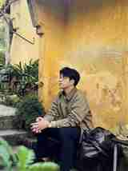

Advantech AIoT InnoWorks 2022
1st PrizeRecognized for an AIoT application concept using Wise-PaaS, sensor data, and applied intelligence to monitor and improve environmental conditions.
AI Engineer Intern Candidate
I am a Robotics and AI student at HCMUTE, focused on turning machine learning ideas into working prototypes. My recent work spans document question answering with RAG, robot inspection with computer vision, reinforcement learning for autonomous vehicles, and AIoT health monitoring.

Hands-on experience across LLM applications, robotics simulation, machine vision, and AIoT.
1st Prize at Advantech AIoT InnoWorks 2022, building an AIoT concept around supermarket air monitoring.
Recognized for the highest graduation project score in Robotics and AI, semester 2/2024-2025.
Proof & Awards
Portfolio evidence matters. These highlights show project execution outside classroom exercises: competition pressure, applied AIoT, and graduation-level evaluation.

Advantech AIoT InnoWorks 2022
1st PrizeRecognized for an AIoT application concept using Wise-PaaS, sensor data, and applied intelligence to monitor and improve environmental conditions.
HCMUTE / Robotics & AI
Top Graduation Project ScoreAwarded for achieving the highest graduation project score in the Robotics and AI program for semester 2/2024-2025.
Selected Work
These projects are shaped from my CV and can be expanded later with demos, screenshots, source links, and detailed case studies.
RAG / LLM Application / RegenX
Developed a RAG-based assistant for internal documents, including ingestion, semantic chunking, vector embeddings, Qdrant search, Supabase metadata, reranking, and adaptive prompt templates with OpenAI models.
Computer Vision / Robotics / ABB
Worked on robotic arm inspection using PyTorch, TensorFlow, OpenCV, RobotStudio simulation, MATLAB/Simulink kinematics, Autodesk Inventor assembly, and real-time socket communication in C#.
Reinforcement Learning / ROS
Built an autonomous navigation prototype using LIDAR, Gazebo simulation, ROS, Stable-Baselines3, PPO/DQN training, and deployment to a physical robot platform.
AIoT / Forecasting / Dashboard
Designed an elderly health risk monitoring concept with IoT sensors, Wise-PaaS data storage, Python forecasting with Scikit-learn, and a dashboard for alerts and trend tracking.
Capabilities
I enjoy the full path from data and model experimentation to integration, evaluation, and a usable interface.
Document ingestion, vector search, prompt design, metadata handling, reranking, and practical answer generation workflows.
Robot simulation, kinematics, visual inspection, image classification, OpenCV pipelines, and real-time integration.
Training and evaluating models for reinforcement learning, forecasting, NLP, computer vision, and AIoT use cases.
Experience & Education
Recognized in Robotics and AI at HCMUTE for semester 2/2024-2025.
Built a RAG-based document QA workflow with OpenAI models, Qdrant, Supabase, semantic chunking, dynamic chunk sizing, and retrieval reranking.
Worked on robotic arm inspection, robot simulation, computer vision classification, and real-time control integration.
Won 1st Prize for an applied AIoT concept using Wise-PaaS and sensor-driven intelligence.
Studying Robotics and AI with coursework in artificial intelligence, machine vision, robot programming, software architecture, IoT, and project-based robotics.
About
My work sits between AI research, robotics, and software implementation. I am comfortable experimenting with models, reading technical documentation, wiring APIs, and creating demos that make an idea easier to evaluate.
I am currently looking for opportunities where I can contribute to AI engineering, LLM applications, computer vision, robotics, and data-driven product prototypes.
Contact
Send a short note with the role, project context, and timeline. I will reply with next steps and any relevant project details.